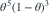

给定θ， 条件独立且服从Bernoulli(θ)，先验为
条件独立且服从Bernoulli(θ)，先验为  。观察到
。观察到  ，损失为
，损失为  。Bayes估计为？
。Bayes估计为？
条件独立且服从Bernoulli(θ)，先验为 。观察到 ，损失为 。Bayes估计为？- A
- B

- C
- D

我已思考，展开答案与解析
正确答案：A
- 似然核为

，与先验核相乘得后验 。 - 平方损失下，最优决策是后验均值 。
易错提醒平方损失给后验均值；先验参数必须先加入成功与失败次数。
考后回忆 · 条件重建 · 回忆6；补充先验与观测条件
依据考试回忆重建；数字、选项和必要条件为补充设定，非原题。